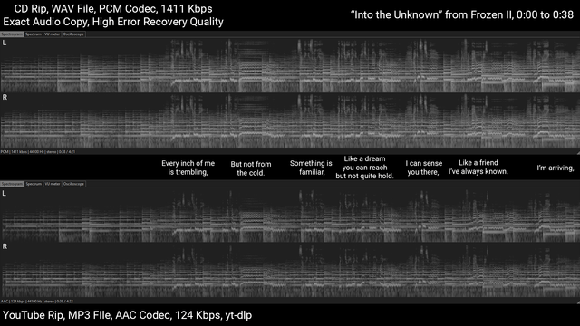

MP3压缩技术 / MP3 Compression Technology
🧠
感知音乐塑形 / Perceptual Music Shaping
移除人耳无法正确听到的声音 / Removes sounds that the human ear cannot hear properly
基于人类听觉系统的生理特性 / Based on physiological characteristics of human hearing
被移除的声音类型 / Types of Removed Sounds
高频声音 / High-frequency sounds
超出人耳听觉范围的频率 / Frequencies beyond human hearing range
被遮蔽的声音 / Masked sounds
被更大声音遮盖的微弱声音 / Weak sounds masked by louder sounds
冗余信息 / Redundant information
重复的数字数据 / Repetitive digital data
压缩过程 / Compression Process
步骤1: 音频分析
Step 1: Audio Analysis
步骤2: 频率过滤
Step 2: Frequency Filtering
步骤3: 数据编码
Step 3: Data Encoding
质量损失情况 / Quality Loss Situations
⚠️
轻微损失 / Minor Loss
某些声音在不影响质量太多的情况下被移除 / Certain sounds removed without affecting quality too much
❌
不可逆转 / Irreversible
一旦压缩，原始数据永久丢失 / Once compressed, original data is permanently lost

压缩效果对比 / Compression Effect Comparison
原始文件 / Original:
50MB WAV file
压缩后 / After:
5MB MP3 file
压缩率 / Ratio:
90%